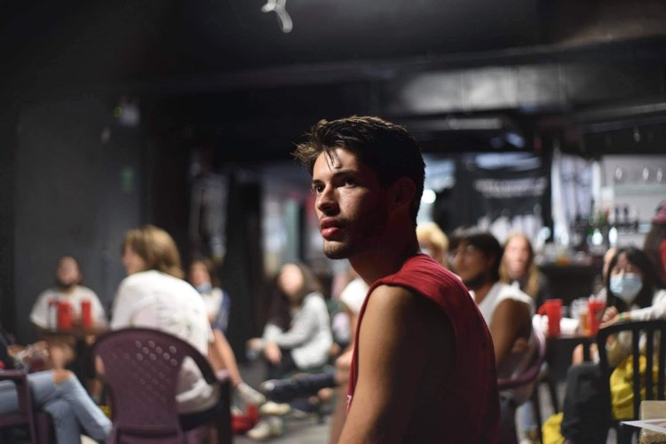

M.ASc Student in Software Engineering
Mila - Quebec AI Institute & Polytechnique Montréal
Developing amortized ML techniques for applications to Neuroprosthetics. Recipient of NSERC CGS-M and FRQNT Master's scholarships.
I am an M.ASc student in Software Engineering at Polytechnique Montréal and Mila - Quebec AI Institute (GPA: 4.0/4.0), supervised by Professor Marco Bonizzato, with co-supervisor Professor Guillaume Lajoie.
My research focuses on amortized ML techniques for applications to Neuroprosthetics, developing efficient methods for neural stimulation optimization in spinal cord injury therapy.
I completed my B.Sc. First-Class Honours in Computer Science with a Minor in Neuroscience at McGill University (GPA: 3.73/4.0). My work spans Gaussian Processes, Large Language Models, Foundation Models, and their applications to healthcare and neuroscience.
Developing amortized ML techniques and Bayesian optimization methods for neural stimulation in spinal cord injury therapy.
Hierarchical Gaussian Process methods for sample-efficient Bayesian Optimization in high-dimensional spaces.
Analyzing LLM training dynamics and developing methods to reduce hallucinations for safer AI deployment.
Using machine learning to analyze fMRI and TMS data for understanding brain function and task prediction.
Proceedings of the 63rd Annual Meeting of the Association for Computational Linguistics (Volume 1: Long Papers), pages 5538-5554, Vienna, Austria
arXiv:2505.11294, May 2025
Heliyon, vol. 10, no. 21, November 2024
UNIQUE Scientific Retreat, Montreal
ACL 2025, Vienna, Austria
Neuroprosthetics Symposium, Université de Montréal
CIRCA Scientific Retreat, Montreal
PolyCongré, Polytechnique Montréal
Université de Montréal
CIRCAteliers, Université de Montréal
Safe Generative AI Workshop @ NeurIPS 2024, Vancouver
Polytechnique Montréal & Mila - Quebec AI Institute
GPA: 4.0/4.0
Principal Investigator: Marco Bonizzato | Co-supervisor: Guillaume Lajoie
Research: Amortized ML techniques for applications to Neuroprosthetics
Coursework: 3D Reconstruction of Medical Images, Representation Learning, Continual Machine Learning, Neurotechnology and Neuroscience
McGill University
GPA: 3.73/4.0 | Minor in Neuroscience
Coursework: Honours Thesis, Reinforcement Learning, NLP, Responsible AI, Applied ML, Honours Algorithms & Data Structures
Canada Graduate Scholarships - Master's Level
Natural Sciences and Engineering Research CouncilNature et Technologies Sector Master's Research Scholarship
Fonds de Recherche du QuébecNeuro-AI Best Poster - Master's Level
UNIQUE Scientific RetreatFor Computer Science
Gouvernement du QuébecI'm always interested in discussing research collaborations, opportunities, or chatting about AI and neuroscience.